🤖 本分析由 DeepSeek 生成 ｜ 修订：2026-09-17 ｜ 本版取代此前的「极光权重 0.30」版本
关于极光，全文只保留这一句客观提示：Lofoten 全域位于极光带内，能否看到取决于当晚云量，住宿位置不构成差异。
| 维度 | 权重 | 含义 | 计算口径 |
|---|---|---|---|
| 白天景区可达 | 0.32 | 三晚住地分别去斯沃尔韦尔 / 莱克内斯 / 雷讷方不方便 | 2×→斯沃尔韦尔(10/2) ＋ 2×→莱克内斯(10/3) ＋ 2×→雷讷(10/4)，取均值后线性映射到 0–10 |
| 10/5 返程车程 | 0.24 | 末夜住地 → EVE 机场 | 按 →EVE 分钟数线性映射（190 min ＝ 满分 10） |
| 住宿体验 | 0.24 | 地区多样性 ＋ rorbu 特色 ＋ 面海 ＋ 能自炊 ＋ 三晚不重样 | 多样性(0–3.5) ＋ rorbu 3.0 ＋ 面海 2.5 ＋ 三晚全部可自炊 1.0 ＋ 三晚不重样 1.0 |
| 补给 / 搬家 / 首日 | 0.20 | 超市距离、两次搬家车程、10/1 落地当日车程 | 0.35×补给 ＋ 0.30×搬家 ＋ 0.35×首日 |
总分 ＝ 0.32×白天可达 ＋ 0.24×返程 ＋ 0.24×体验 ＋ 0.20×便利
| 编号 | 约束 |
|---|---|
| H02 | 只能连住 10/3–10/4 |
| H08 | 只能连住 10/2–10/3 |
| H07 | 只能订到 10/2 一晚 |
| H05 / H06 | 只能连续两晚 |
| H11 / H12 | 禁止连住（Hamnøy / Nusfjord） |
可行组合（已剔硬约束 ＋ Hamnøy/Nusfjord 连住）共 404 个：其中无连住 294 个、含连住 110 个。 3 晚住宿小计区间：4,752 – 10,530 元。
车程均为 OSRM 真实路网（分钟）。「单价」为元/晚，来自你的预订页截图。
| 编号 | 住处 | 地区 | 单价 (元/晚) |
→EVE | →斯沃尔韦尔 | →莱克内斯 | →雷讷 | 可订 / 连住约束 |
|---|---|---|---|---|---|---|---|---|
| H01 | Banhammaren 39 | Henningsvær | 2,408 | 191 | 31 | 67 | 123 | 无连住约束 |
| H02 | Misværveien 2 码头公寓 | Henningsvær | 1,345 | 189 | 27 | 64 | 120 | 只能连住 10/3–10/4 |
| H03 | Henningsvær Bryggehotell | Henningsvær | 2,298 | 189 | 27 | 63 | 119 | 无连住约束（酒店） |
| H04 | Hattvika Lodge – Hillside | Ballstad | 2,664 | 245 | 87 | 15 | 68 | 无连住约束 |
| H05 | Fishermans Villa Ballstad | Ballstad | 1,918 | 243 | 84 | 12 | 65 | 只能连续两晚 |
| H06 | Jusnesveien 55 | Flakstad / Ramberg | 2,243 | 260 | 101 | 32 | 31 | 只能连续两晚 |
| H07 | Andopveien 35 Oceanview | Ramberg | 2,243 | 261 | 102 | 31 | 28 | 只能订 10/2 一晚 |
| H08 | Elvis Presleys vei 25（Varanes） | Flakstad / Ramberg | 3,220 | 260 | 101 | 32 | 31 | 只能连住 10/2–10/3 |
| H09 | Vei 2803 22 全景公寓 | Gimsøystraumen | 3,783 | 186 | 24 | 53 | 109 | 无连住约束 |
| H10 | Unstad Arctic Resort | Unstad | 2,061 | 232 | 66 | 23 | 78 | 无连住约束 |
| H11 | Eliassen Rorbuer | Hamnøy | 1,959 | 282 | 122 | 55 | 9 | 无连住约束，但禁连住 |
| H12 | Nusfjord Village & Resort | Nusfjord | 2,300 | 258 | 98 | 28 | 44 | 无连住约束，但禁连住 |
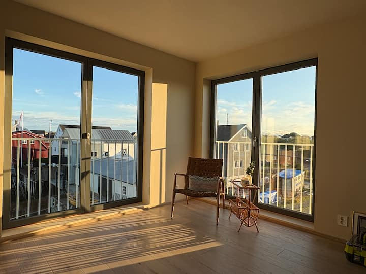
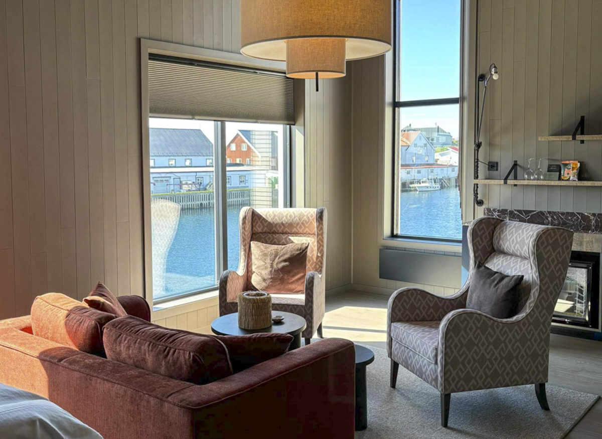
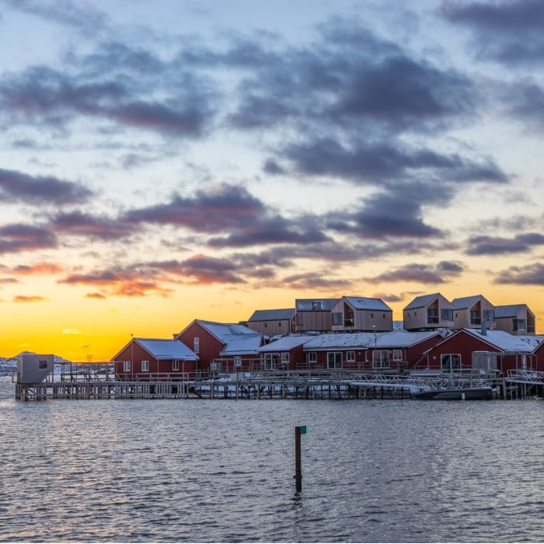
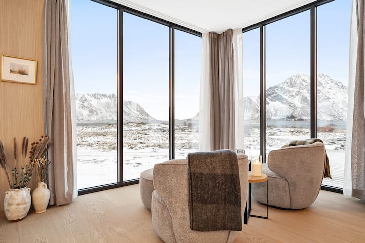
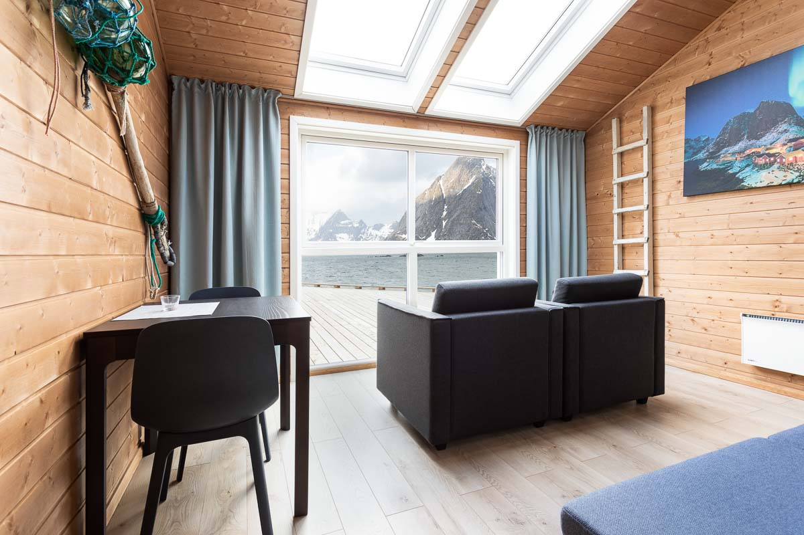
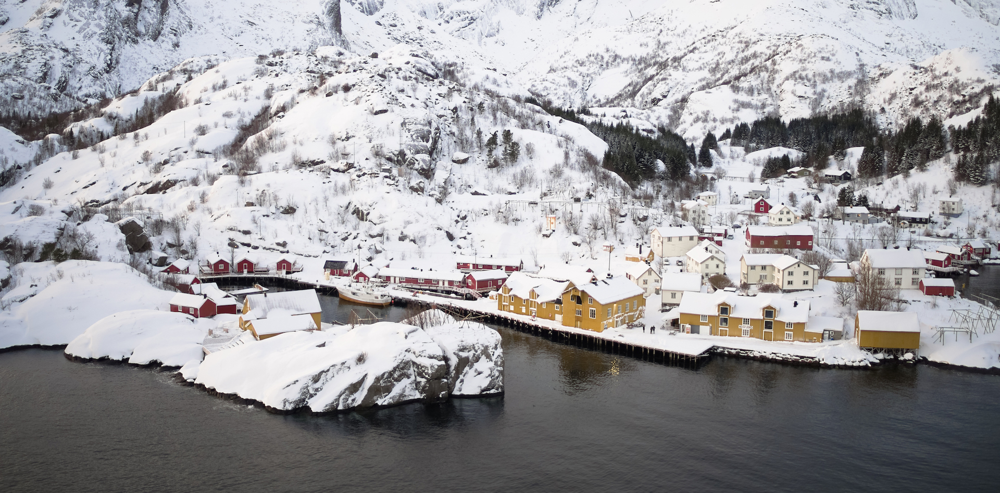
这一池满足「三晚三个不同住处」，是默认推荐池。
| # | 10/2 → 10/3 → 10/4 | 总分 | 白天可达 | 返程 | 体验 | 便利 | 3晚元 | 走廊 min |
|---|---|---|---|---|---|---|---|---|
| 01 | Henningsvær Bryggehotell → Hattvika Hillside → Vei 2803 22 全景公寓 | 7.810 | 5.33 | 10.00 | 10.00 | 6.52 | 8,745 | 550 |
| 02 | Henningsvær Bryggehotell → Unstad Arctic Resort → Vei 2803 22 全景公寓 | 7.792 | 5.00 | 10.00 | 10.00 | 6.96 | 8,142 | 520 |
| 03 | Banhammaren 39 → Hattvika Hillside → Vei 2803 22 全景公寓 | 7.725 | 5.17 | 10.00 | 10.00 | 6.36 | 8,855 | 554 |
| 04 | Vei 2803 22 全景公寓 → Hattvika Hillside → Henningsvær Bryggehotell | 7.717 | 5.04 | 10.00 | 10.00 | 6.52 | 8,745 | 550 |
| 05 | Vei 2803 22 全景公寓 → Unstad Arctic Resort → Henningsvær Bryggehotell | 7.699 | 4.71 | 10.00 | 10.00 | 6.96 | 8,142 | 520 |
| 06 | Vei 2803 22 全景公寓 → Hattvika Hillside → Vei 2803 22 全景公寓 | 7.674 | 5.46 | 10.00 | 9.00 | 6.83 | 10,231 | 534 |
| 07 | Vei 2803 22 全景公寓 → Hattvika Hillside → Banhammaren 39 | 7.616 | 4.88 | 9.90 | 10.00 | 6.40 | 8,855 | 554 |
| 08 | Henningsvær Bryggehotell → Nusfjord Village → Vei 2803 22 全景公寓 | 7.566 | 4.79 | 10.00 | 10.00 | 6.16 | 8,381 | 564 |
| 09 | Banhammaren 39 → Nusfjord Village → Vei 2803 22 全景公寓 | 7.489 | 4.62 | 10.00 | 10.00 | 6.05 | 8,491 | 567 |
| 10 | Vei 2803 22 全景公寓 → Nusfjord Village → Henningsvær Bryggehotell | 7.473 | 4.50 | 10.00 | 10.00 | 6.16 | 8,381 | 564 |
| 11 | Vei 2803 22 全景公寓 → Hattvika Hillside → Unstad Arctic Resort | 7.439 | 6.75 | 5.80 | 10.00 | 7.43 | 8,508 | 551 |
| 12 | Vei 2803 22 全景公寓 → Nusfjord Village → Banhammaren 39 | 7.380 | 4.33 | 9.90 | 10.00 | 6.09 | 8,491 | 567 |
| 13 | Henningsvær Bryggehotell → Hattvika Hillside → Unstad Arctic Resort | 7.335 | 6.62 | 5.80 | 10.00 | 7.12 | 7,023 | 567 |
| 14 | Banhammaren 39 → Hattvika Hillside → Henningsvær Bryggehotell | 7.328 | 4.75 | 10.00 | 9.00 | 6.24 | 7,370 | 570 |
| 15 | Banhammaren 39 → Henningsvær Bryggehotell → Vei 2803 22 全景公寓 | 7.327 | 3.17 | 10.00 | 9.00 | 8.77 | 8,489 | 422 |
| 16 | Henningsvær Bryggehotell → Banhammaren 39 → Vei 2803 22 全景公寓 | 7.318 | 3.17 | 10.00 | 9.00 | 8.73 | 8,489 | 424 |
| 17 | Henningsvær Bryggehotell → Hattvika Hillside → Banhammaren 39 | 7.312 | 4.75 | 9.90 | 9.00 | 6.28 | 7,370 | 570 |
| 18 | Banhammaren 39 → Unstad Arctic Resort → Henningsvær Bryggehotell | 7.271 | 4.42 | 10.00 | 9.00 | 6.49 | 6,767 | 540 |
| 19 | Banhammaren 39 → Vei 2803 22 全景公寓 → Henningsvær Bryggehotell | 7.267 | 3.17 | 10.00 | 9.00 | 8.47 | 8,489 | 440 |
| 20 | Henningsvær Bryggehotell → Unstad Arctic Resort → Banhammaren 39 | 7.254 | 4.42 | 9.90 | 9.00 | 6.53 | 6,767 | 540 |
| 21 | Vei 2803 22 全景公寓 → Hattvika Hillside → Nusfjord Village | 7.253 | 8.17 | 3.20 | 10.00 | 7.36 | 8,747 | 576 |
| 22 | Banhammaren 39 → Hattvika Hillside → Unstad Arctic Resort | 7.251 | 6.46 | 5.80 | 10.00 | 6.96 | 7,133 | 571 |
| 23 | Henningsvær Bryggehotell → Vei 2803 22 全景公寓 → Banhammaren 39 | 7.250 | 3.17 | 9.90 | 9.00 | 8.51 | 8,489 | 440 |
| 24 | Banhammaren 39 → Unstad Arctic Resort → Vei 2803 22 全景公寓 | 7.236 | 4.83 | 10.00 | 8.00 | 6.84 | 8,252 | 522 |
| 25 | Banhammaren 39 → Hattvika Hillside → Banhammaren 39 | 7.235 | 4.58 | 9.90 | 9.00 | 6.16 | 7,480 | 574 |
这一池的结构性特征：前 10 名里，末夜（10/4）全部落在 Vei 2803 22 全景公寓（H09，Gimsøystraumen）或 Henningsvær —— 也就是东侧。原因是 10/4 决定 10/5 的返程车程，而 EVE 在东北角。
| # | 组合 | 白天可达 | 总分 | 3晚元 | 走廊 min |
|---|---|---|---|---|---|
| 1 | Vei 2803 22 全景公寓 → Hattvika Hillside → Eliassen Rorbuer | 9.62 | 6.930 | 8,406 | 627 |
| 2 | Henningsvær Bryggehotell → Hattvika Hillside → Eliassen Rorbuer | 9.50 | 6.827 | 6,921 | 643 |
| 3 | Banhammaren 39 → Hattvika Hillside → Eliassen Rorbuer | 9.33 | 6.742 | 7,031 | 647 |
| 4 | Vei 2803 22 全景公寓 → Unstad Arctic Resort → Eliassen Rorbuer | 9.29 | 6.829 | 7,803 | 618 |
| 5 | Henningsvær Bryggehotell → Unstad Arctic Resort → Eliassen Rorbuer | 9.17 | 6.717 | 6,318 | 636 |
与「住宿体验」同榜：首选池 #01–#05（返程 10.00，末夜都在 H09 东侧）。
同 4.2 —— 首选池 #01–#05。
| # | 组合 | 便利 | 总分 | 3晚元 | 走廊 min |
|---|---|---|---|---|---|
| 1 | Henningsvær Bryggehotell → Banhammaren 39 → Henningsvær Bryggehotell | 8.97 | 6.393 | 7,004 | 412 |
| 2 | Banhammaren 39 → Henningsvær Bryggehotell → Banhammaren 39 | 8.85 | 6.293 | 7,114 | 416 |
| 3 | Vei 2803 22 全景公寓 → Henningsvær Bryggehotell → Banhammaren 39 | 8.81 | 7.217 | 8,489 | 422 |
| 4 | Banhammaren 39 → Henningsvær Bryggehotell → Vei 2803 22 全景公寓 | 8.77 | 7.327 | 8,489 | 422 |
| 5 | Henningsvær Bryggehotell → Banhammaren 39 → Vei 2803 22 全景公寓 | 8.73 | 7.318 | 8,489 | 424 |
注意 4.4 与 4.2/4.3 是对立的：最省心的一族（前 2 名）白天可达只有 2.58–2.75，等于把白天全耗在补货和搬家上。
| # | 组合 | 3晚元 | 总分 |
|---|---|---|---|
| 1 | Andopveien 35 Oceanview → Unstad Arctic Resort → Eliassen Rorbuer | 6,263 | 5.249 |
| 2 | Henningsvær Bryggehotell → Unstad Arctic Resort → Eliassen Rorbuer | 6,318 | 6.717 |
| 3 | Unstad Arctic Resort → Henningsvær Bryggehotell → Eliassen Rorbuer | 6,318 | 5.277 |
| 4 | Unstad Arctic Resort → Nusfjord Village → Eliassen Rorbuer | 6,320 | 6.004 |
| 5 | Nusfjord Village → Unstad Arctic Resort → Eliassen Rorbuer | 6,320 | 5.314 |
同 4.4 前 5（走廊 412 / 416 / 422 / 422 / 424 min）。
如果你想让最后一晚睡在「正宗 rorbu ＋ 雷讷 / Å 就在门口」的西线，10/5 返程要 4:42（282 min），20:05 那班最晚 13:53 出发；10/5 白昼可支配只剩约 4:53。
| # | 10/2 → 10/3 | 白天可达 | 体验 | 便利 | 总分 | 3晚元 | 走廊 min |
|---|---|---|---|---|---|---|---|
| 1 | H09 Vei 2803 22 → H04 Hattvika Hillside | 9.62 | 10.00 | 6.29 | 6.930 | 8,406 | 627 |
| 2 | H09 Vei 2803 22 → H10 Unstad Arctic Resort | 9.29 | 10.00 | 6.32 | 6.829 | 7,803 | 618 |
| 3 | H03 Henningsvær Bryggehotell → H04 Hattvika Hillside | 9.50 | 10.00 | 5.97 | 6.827 | 6,921 | 643 |
| 4 | H09 Vei 2803 22 → H12 Nusfjord Village | 9.08 | 10.00 | 6.48 | 6.795 | 8,042 | 605 |
| 5 | H01 Banhammaren 39 → H04 Hattvika Hillside | 9.33 | 10.00 | 5.82 | 6.742 | 7,031 | 647 |
| 6 | H03 Henningsvær Bryggehotell → H10 Unstad Arctic Resort | 9.17 | 10.00 | 5.96 | 6.717 | 6,318 | 636 |
| 7 | H03 Henningsvær Bryggehotell → H12 Nusfjord Village | 8.96 | 10.00 | 6.00 | 6.659 | 6,557 | 629 |
| 8 | H01 Banhammaren 39 → H10 Unstad Arctic Resort | 9.00 | 10.00 | 5.84 | 6.640 | 6,428 | 638 |
| 9 | H01 Banhammaren 39 → H12 Nusfjord Village | 8.79 | 10.00 | 5.86 | 6.578 | 6,667 | 632 |
| 10 | H03 Henningsvær Bryggehotell → H09 Vei 2803 22 | 7.92 | 10.00 | 6.38 | 6.401 | 8,040 | 614 |
| 11 | H01 Banhammaren 39 → H09 Vei 2803 22 | 7.75 | 10.00 | 6.18 | 6.308 | 8,150 | 620 |
| 12 | H09 Vei 2803 22 → H03 Henningsvær Bryggehotell | 7.62 | 10.00 | 6.04 | 6.240 | 8,040 | 628 |
| 13 | H10 Unstad Arctic Resort → H04 Hattvika Hillside | 7.88 | 10.00 | 5.26 | 6.164 | 6,684 | 644 |
| 14 | H09 Vei 2803 22 → H01 Banhammaren 39 | 7.46 | 10.00 | 5.86 | 6.151 | 8,150 | 633 |
| 15 | H10 Unstad Arctic Resort → H12 Nusfjord Village | 7.33 | 10.00 | 5.33 | 6.004 | 6,320 | 628 |
看这里的第 6 名：Henningsvær Bryggehotell → Unstad → Eliassen，3 晚只要 6,318 元，白天可达 9.17，体验满分 —— 如果你想省钱又不牺牲白天，这是西线收尾里性价比最高的一档。
| 末夜 = | #1 | #2 | #3 | #4 | #5 |
|---|---|---|---|---|---|
| H09 Vei 2803 22（Gimsøystraumen） | H03→H04｜7.810｜8,745｜550｜白昼 6:29 | H03→H10｜7.792｜8,142｜520 | H01→H04｜7.725｜8,855｜554 | H09→H04｜7.674｜10,231｜534 | H03→H12｜7.566｜8,381｜564 |
| H10 Unstad | H09→H04｜7.439｜8,508｜551｜白昼 5:43 | H03→H04｜7.335｜7,023｜567 | H01→H04｜7.251｜7,133｜571 | H09→H12｜7.167｜8,144｜563 | H03→H12｜7.031｜6,659｜587 |
| H12 Nusfjord | H09→H04｜7.253｜8,747｜576｜白昼 5:17 | H03→H04｜7.149｜7,262｜592 | H09→H10｜7.139｜8,144｜570 | H01→H04｜7.064｜7,372｜596 | H03→H10｜7.027｜6,659｜588 |
（格式：10/2 → 10/3 ｜ 总分 ｜ 3晚元 ｜ 走廊 min）
| 10/2 住 | 最佳 10/3 | 白天可达 | 体验 | 便利 | 总分 | 3晚元 | →EVE | 10/5 最晚出发 |
|---|---|---|---|---|---|---|---|---|
| H09 Vei 2803 22 全景公寓 | H04 Hattvika Hillside | 9.62 | 10.00 | 6.29 | 6.930 | 8,406 | 4:42 | 13:53 |
| H03 Henningsvær Bryggehotell | H04 Hattvika Hillside | 9.50 | 10.00 | 5.97 | 6.827 | 6,921 | 4:42 | 13:53 |
| H01 Banhammaren 39 | H04 Hattvika Hillside | 9.33 | 10.00 | 5.82 | 6.742 | 7,031 | 4:42 | 13:53 |
| H10 Unstad Arctic Resort | H04 Hattvika Hillside | 7.88 | 10.00 | 5.26 | 6.164 | 6,684 | 4:42 | 13:53 |
| H04 Hattvika Hillside | H12 Nusfjord Village | 6.46 | 10.00 | 5.18 | 5.694 | 6,923 | 4:42 | 13:53 |
| H05 Fishermans Villa Ballstad | — 无零连住可行方案 | |||||||
| H06 Jusnesveien 55 | — 无零连住可行方案 |
10/2 的四个真实分支： - H03 Henningsvær Bryggehotell —— 落地最省事、有餐厅早餐、单晚最便宜（2,298）。代价：10/3 要横穿一次岛（→H04 79 min）。 - H01 Banhammaren 39 —— 同村公寓、自炊、单晚 2,408，比 H03 贵 110 元且没有早餐服务。 - H09 Vei 2803 22 全景公寓 —— 到 EVE 只有 186 min（全场最短），落地当晚最轻松；单晚 3,783 是全场最贵。 - H10 Unstad Arctic Resort —— 首夜直接住进西部的冲浪村（单晚 2,061），10/3 再往南挪到 Ballstad 只要 37 min。
基准 A：10/2 H09（Vei 2803 22）→ 10/3 H04（Hattvika Hillside）
| 10/4 住处 | 白天可达 | 体验 | 便利 | 总分 | 3晚元 | 走廊 min | →EVE | 20:05 最晚出发 | 10/5 白昼 |
|---|---|---|---|---|---|---|---|---|---|
| H11 Eliassen Rorbuer | 9.62 | 10.00 | 6.29 | 6.930 | 8,406 | 627 | 4:42 | 13:53 | 4:53 |
| H09 Vei 2803 22 全景公寓 | 5.46 | 9.00 | 6.83 | 7.674 | 10,231 | 534 | 3:06 | 15:29 | 6:29 |
| H10 Unstad Arctic Resort | 6.75 | 10.00 | 7.43 | 7.439 | 8,508 | 551 | 3:52 | 14:43 | 5:43 |
| H12 Nusfjord Village | 8.17 | 10.00 | 7.36 | 7.253 | 8,747 | 576 | 4:18 | 14:17 | 5:17 |
| H06 Jusnesveien 55 | — 不可行（房源只能连续两晚） |
基准 B：10/2 H03（Henningsvær Bryggehotell）→ 10/3 H04（Hattvika Hillside）
| 10/4 住处 | 白天可达 | 体验 | 便利 | 总分 | 3晚元 | 走廊 min | →EVE | 20:05 最晚出发 | 10/5 白昼 |
|---|---|---|---|---|---|---|---|---|---|
| H11 Eliassen Rorbuer | 9.50 | 10.00 | 5.97 | 6.827 | 6,921 | 643 | 4:42 | 13:53 | 4:53 |
| H09 Vei 2803 22 全景公寓 | 5.33 | 10.00 | 6.52 | 7.810 | 8,745 | 550 | 3:06 | 15:29 | 6:29 |
| H10 Unstad Arctic Resort | 6.62 | 10.00 | 7.12 | 7.335 | 7,023 | 567 | 3:52 | 14:43 | 5:43 |
| H12 Nusfjord Village | 8.04 | 10.00 | 7.04 | 7.149 | 7,262 | 592 | 4:18 | 14:17 | 5:17 |
| H06 Jusnesveien 55 | — 不可行 |
| 末夜住西线（Eliassen） | 末夜住东 / 中部（H09） | |
|---|---|---|
| 10/4 白天能走的经典 | 雷讷 / Hamnøy / Å / Reinebringen 全在门口（往返 18 min） | 雷讷往返 218 min，基本放弃西段 |
| 10/5 返 EVE | 4:42 | 3:06 |
| 20:05 那班最晚出发 | 13:53 | 15:29 |
| 10/5 白昼可支配 | 4:53 | 6:29 |
| 总分（v3） | 6.83–6.93 | 7.67–7.81 |
代价换算：选西线收尾 = 10/5 多开 1 小时 36 分 ＋ 当天早出发 1 小时 36 分，换来 10/4 白天可达从 5.33 涨到 9.50。
| 日期 | 移动 | 车程 | 备注 |
|---|---|---|---|
| 10/1 | Sandtorgholmen → 住地 | 30 ＋ 186 ＝ 3:36 | 落地 22:40，约 23:20 到店 |
| 10/2 | 住地 ↔ 斯沃尔韦尔 | 往返 48 min | 白天：Gimsøystraumen / Hov / Henningsvær |
| 10/3 | 搬家 → Ballstad | 66 min | 住地 ↔ 莱克内斯 往返 30 min |
| 10/4 | 搬家 → Hamnøy | 63 min | 住地 ↔ 雷讷 往返 18 min |
| 10/5 | 住地 → EVE | 4:42（282 min） | 20:05 班最晚 13:53 出发 |
分数：v3 6.930 ｜ 白天可达 9.62 ｜ 体验 10.00 ｜ 便利 6.29 ｜ 走廊 627 min ｜ 3 晚 8,406 元
| 日期 | 移动 | 车程 | 备注 |
|---|---|---|---|
| 10/1 | 同方案 W | 3:36 | — |
| 10/2 | 同方案 W | 48 min 往返 | — |
| 10/3 | 同方案 W | 66 min | — |
| 10/4 | 搬家 → 回 Gimsøystraumen | 66 min | 住地 ↔ 雷讷 往返 218 min |
| 10/5 | 住地 → EVE | 3:06（186 min） | 20:05 班最晚 15:29 出发 |
分数：v3 7.674 ｜ 白天可达 5.46 ｜ 体验 9.00 ｜ 便利 6.83 ｜ 走廊 534 min ｜ 3 晚 10,231 元
固定项：10/1 Sandtorgholmen Hotel 1,376.11 元 ｜ 10/5 Sandtorgholmen Hotel 1,415.42 元 ｜ 10/5 奥斯陆机场酒店 ≈ 1,600 元
| 方案 | 三晚住宿 | 3 晚小计 | 走 10/6 06:30（宿 Sandtorgholmen） | 走 10/5 20:05（宿 OSL 机场酒店） |
|---|---|---|---|---|
| W 西线收尾 Vei 2803 22 → Hattvika Hillside → Eliassen Rorbuer | 3,783 ＋ 2,664 ＋ 1,959 | 8,406 | 11,198 元 | 11,382 元 |
| E 东部收尾 Vei 2803 22 → Hattvika Hillside → Vei 2803 22 | 3,783 ＋ 2,664 ＋ 3,783 | 10,231 | 13,022 元 | 13,207 元 |
| W 酒店版 Henningsvær Bryggehotell → Hattvika Hillside → Eliassen Rorbuer | 2,298 ＋ 2,664 ＋ 1,959 | 6,921 | 9,712 元 | 9,897 元 |
| E 酒店版 Henningsvær Bryggehotell → Hattvika Hillside → Vei 2803 22 | 2,298 ＋ 2,664 ＋ 3,783 | 8,745 | 11,537 元 | 11,721 元 |
| 最省版 Henningsvær Bryggehotell → Unstad Arctic Resort → Eliassen Rorbuer | 2,298 ＋ 2,061 ＋ 1,959 | 6,318 | 9,109 元 | 9,294 元 |
最贵与最省相差约 4,200 元（走廊/白天可达的差别在 100–420 min 量级）。按你的口径，这个价差不构成决策依据。
权重变为 白天可达 0.444 / 体验 0.333 / 便利 0.222，首选池前 15：
| # | 组合 | 新分 | v3 分 | 3晚元 |
|---|---|---|---|---|
| 1 | Vei 2803 22 → Hattvika Hillside → Eliassen Rorbuer | 9.009 | 6.930 | 8,406 |
| 2 | Henningsvær Bryggehotell → Hattvika Hillside → Eliassen | 8.883 | 6.827 | 6,921 |
| 3 | Vei 2803 22 → Unstad → Eliassen | 8.867 | 6.829 | 7,803 |
| 4 | Vei 2803 22 → Nusfjord → Eliassen | 8.810 | 6.795 | 8,042 |
| 5 | Banhammaren 39 → Hattvika Hillside → Eliassen | 8.774 | 6.742 | 7,031 |
| 6 | Henningsvær Bryggehotell → Unstad → Eliassen | 8.731 | 6.717 | 6,318 |
| 7 | Henningsvær Bryggehotell → Nusfjord → Eliassen | 8.648 | 6.659 | 6,557 |
| 8 | Banhammaren 39 → Unstad → Eliassen | 8.631 | 6.640 | 6,428 |
| 9 | Vei 2803 22 → Hattvika Hillside → Nusfjord | 8.598 | 7.253 | 8,747 |
| 10 | Banhammaren 39 → Nusfjord → Eliassen | 8.544 | 6.578 | 6,667 |
| 11 | Henningsvær Bryggehotell → Hattvika Hillside → Nusfjord | 8.472 | 7.149 | 7,262 |
| 12 | Vei 2803 22 → Unstad → Nusfjord | 8.442 | 7.139 | 8,144 |
| 13 | Banhammaren 39 → Hattvika Hillside → Nusfjord | 8.363 | 7.064 | 7,372 |
| 14 | Henningsvær Bryggehotell → Unstad → Nusfjord | 8.307 | 7.027 | 6,659 |
| 15 | Henningsvær Bryggehotell → Vei 2803 22 → Eliassen | 8.269 | 6.401 | 8,040 |
结论：排名会翻转。 只要「返程车程」参与打分，榜首一律往东收尾（末夜 H09）；一旦把它拿掉，榜首全部变成西线收尾（末夜 Eliassen）。这一维的权重要不要留（0.24 是否给多了），需要你自己判断。
| 方案 | 组合 | v3 总分 | 3晚元 | 走廊 min | 结论 |
|---|---|---|---|---|---|
| A | H07 Oceanview → H11 Eliassen → H04 Hattvika | 5.059 | 7,870 | 619 | 首选池排名 246 / 294，很靠后 |
| A2 | H04 → H11 → H07 | — | — | — | 不可行（H07 只能订 10/2） |
| B1 | H04 → H06 Jusnesveien 连住 | 5.845 | 7,149 | 575 | 含连住（房源强制），备选池 |
| B2 | H04 → H12 Nusfjord 连住 | — | — | — | 被新约束排除 |
| X | H07 → H11 Eliassen 连住 | — | — | — | 被新约束排除 |
| Y | H07 Oceanview → H10 Unstad → H11 Eliassen | 5.249 | 6,263 | 682 | 总价最低，但首选池排名 228 |
| v2 榜首 | H09 → H10 连住 | 6.553 | 7,905 | 498 | 含连住（自选），备选池 |
| v3 #1 | H03 → H04 → H09 | 7.810 | 8,745 | 550 | 首选池第 1 |
| v3 #2 | H03 → H10 → H09 | 7.792 | 8,142 | 520 | 首选池第 2 |
| v3 #3 | H01 → H04 → H09 | 7.725 | 8,855 | 554 | 首选池第 3 |
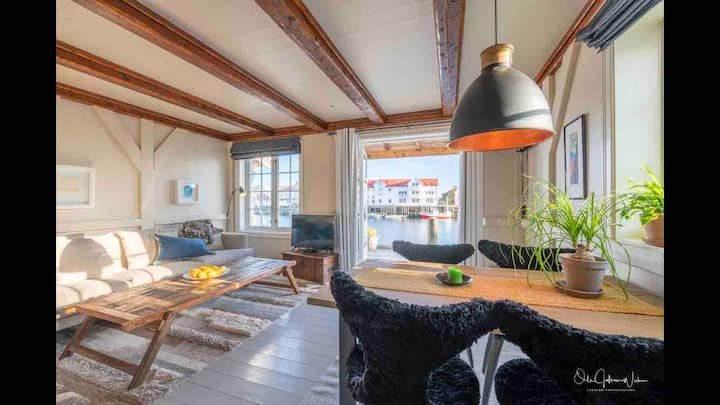
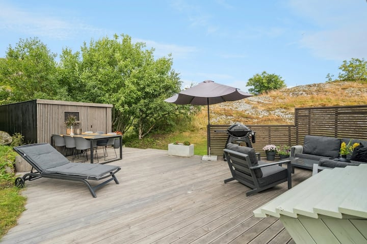
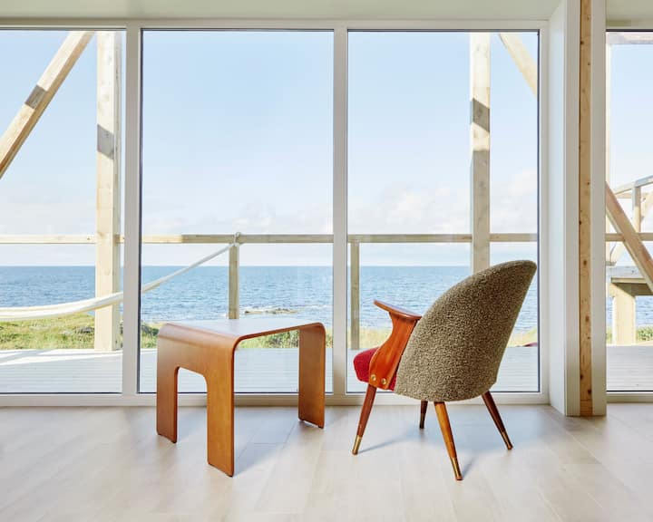
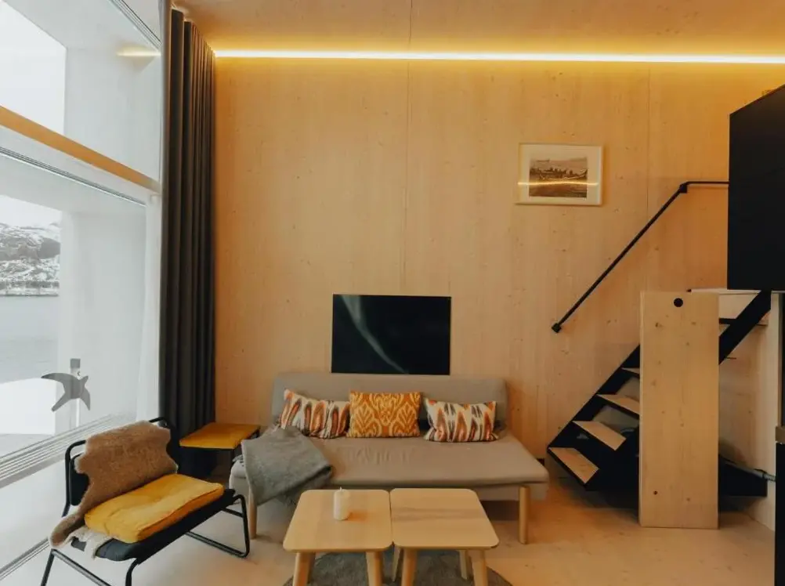
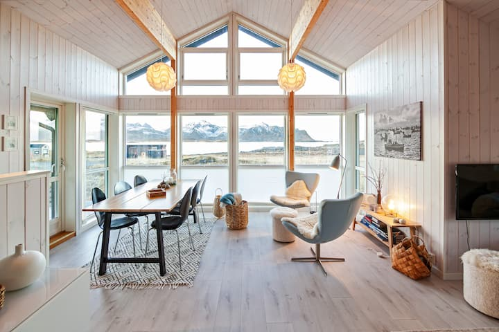
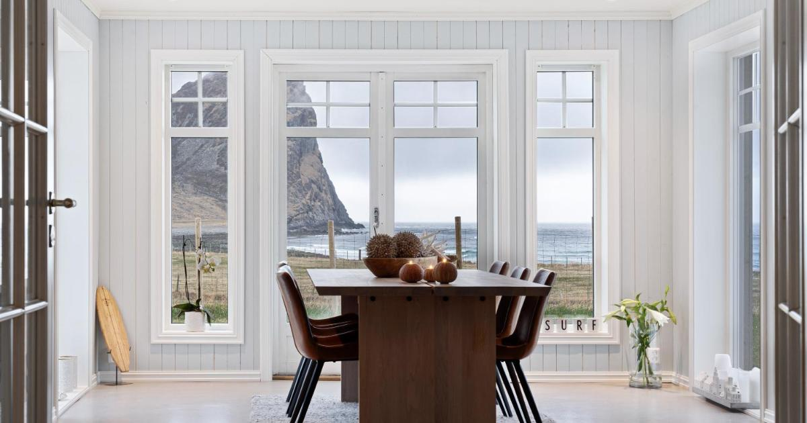
机场区 / 其他参考住宿
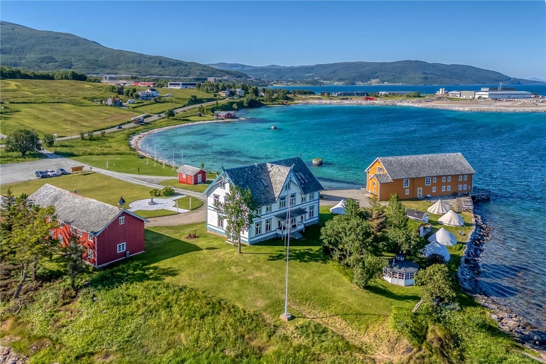
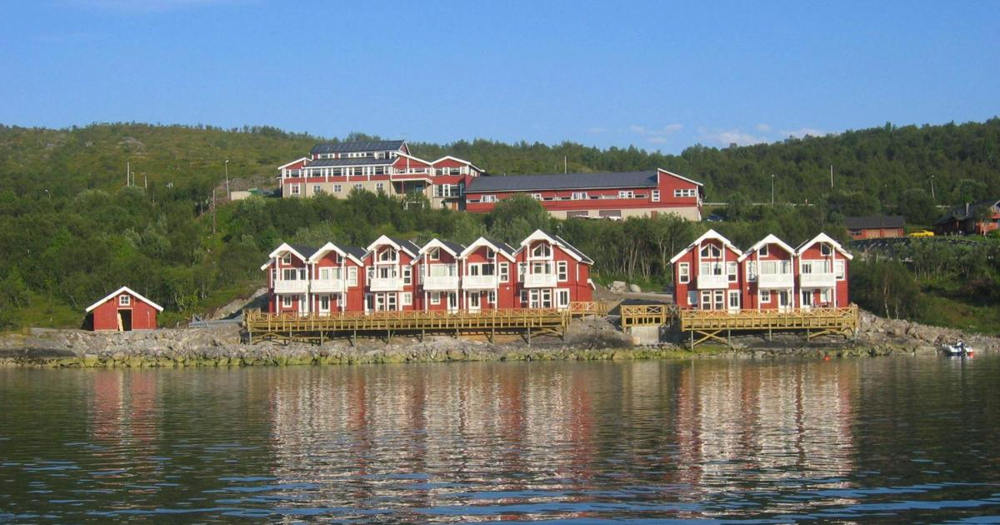
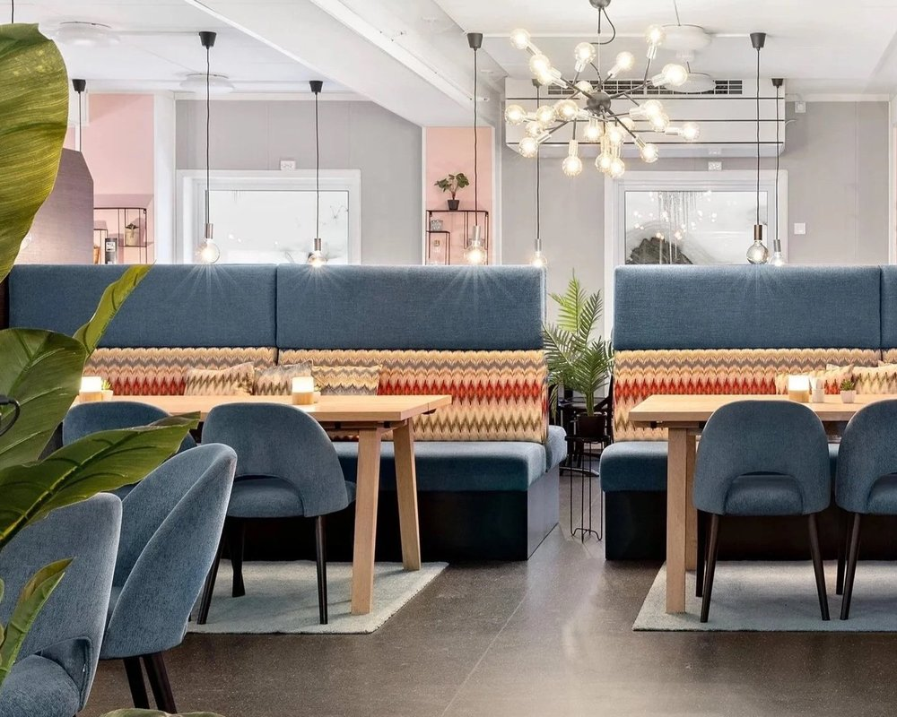
🤖 本分析由 DeepSeek 生成